Motivation
A scene generator learns a broad prior over rooms from data. For a task, we want the part of that prior that satisfies the constraint, and we want to sample from it with the same diversity as the original dataset.
Prompt
“Robot grasping scene where all support surfaces are within a 1.0 m vertical reach limit”
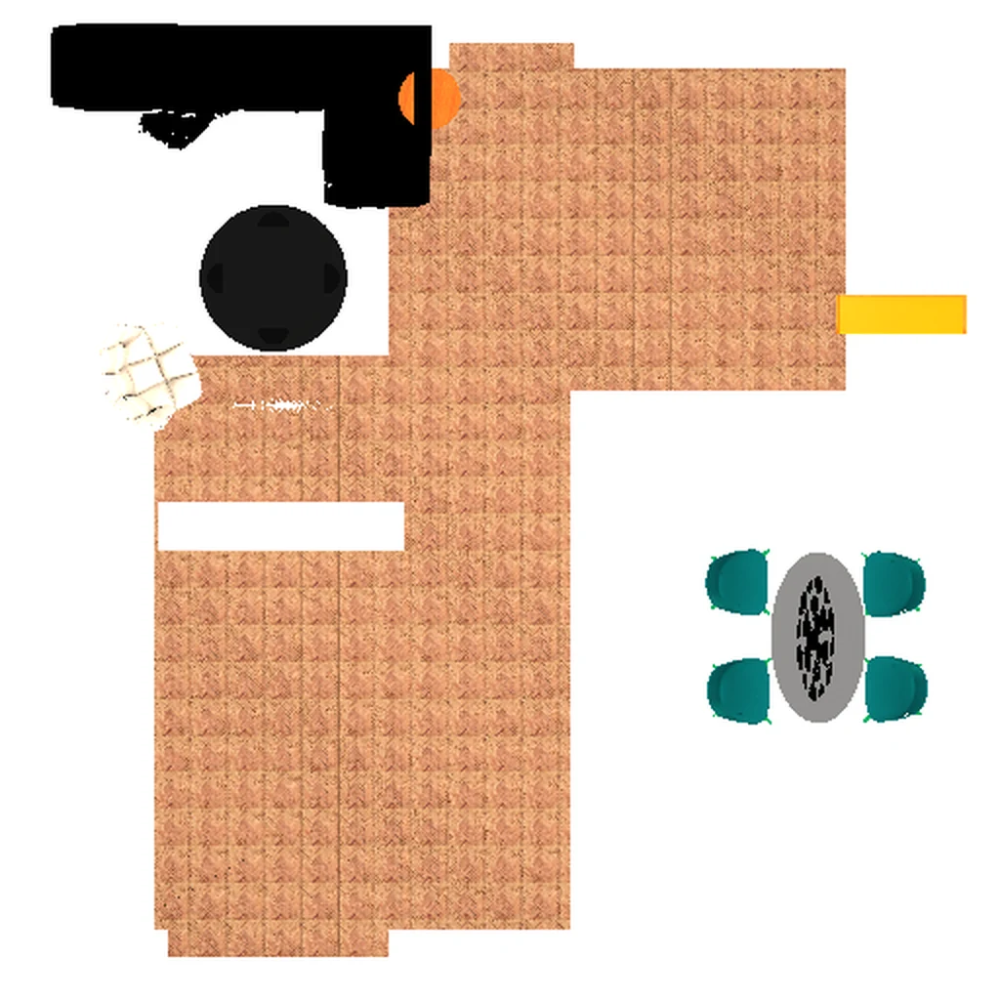
LLM / language-driven
Holodeck, SAGE, InstructScene
- Meets the prompt
- Learned from data
Plans each scene separately. Every new scene costs more LLM calls, layouts are not learned from real rooms, and furniture often ends up outside the room: 43.39% of objects for InstructScene.
Shown: InstructScene sample.
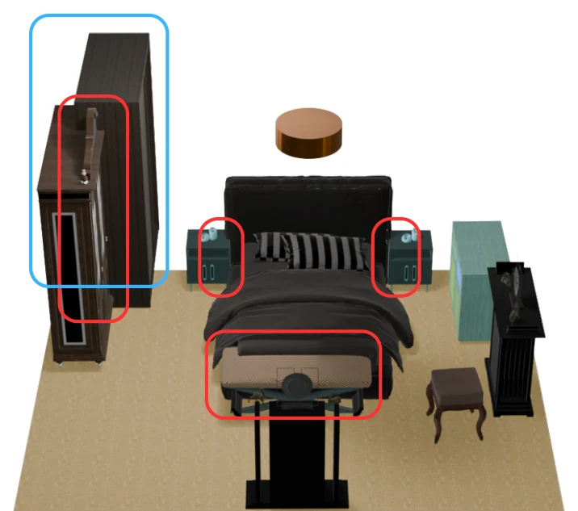
Data-driven generators
ATISS, DiffuScene, MiDiffusion
- Meets the prompt
- Learned from data
They learn the spread of real rooms, flaws included: 42% of objects in real 3D-FRONT bedrooms already collide. They cannot take a prompt, so hard constraints are rarely met. MiDiffusion meets this one in 4.53% of scenes.
Shown: MiDiffusion sample.
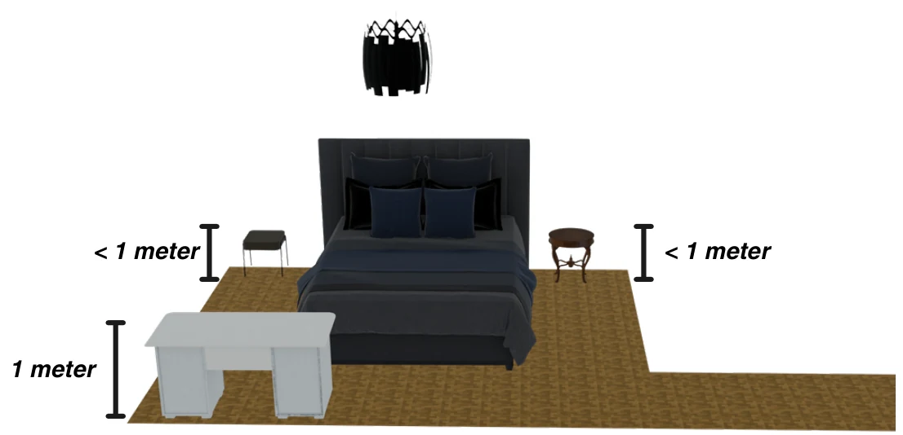
iARCS (ours)
Diffusion prior + agentic RL
- Meets the prompt
- Learned from data
Starts from the prior learned from data and fine-tunes it toward the part that meets the prompt. Samples stay diverse and no LLM runs at sampling time. 73.83% of scenes meet the prompt.
Intuition
- Rooms the model learned from data
- Rooms that meet the prompt
- Base model sample
- iARCS sample
- 1A diffusion model learns a broad prior from data.
- 2The prompt marks a small region. Few samples land there.
- 3iARCS fine-tunes the model toward it. Samples stay spread out.
Learn a broad prior from data, then sample from the part of it that meets the prompt.
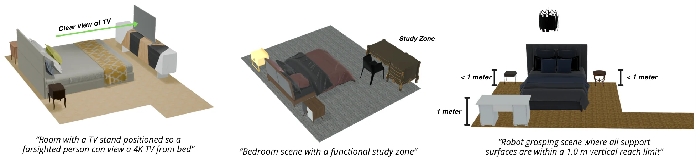
Abstract
Synthetic 3D scene generation is increasingly used as a data source for computer vision and embodied AI, but existing generators often optimize perceptual realism without reliably satisfying task-critical functional constraints. This mismatch limits the usefulness of synthetic data for downstream training, where accessibility, traversability, and spatial rule compliance are often essential. We present iARCS, an iterative agentic reinforcement learning framework that adapts a pretrained scene generator to natural-language task requirements. iARCS uses a two-phase strategy: universal-reward pretraining to improve physical plausibility and layout quality, followed by task-specific fine-tuning with LLM-generated reward programs that are iteratively refined from training feedback. Experiments show improved constraint fidelity on walkability, reachability, and clearance-focused tasks, effective task-specific constraint optimization, and competitive scene diversity. We further show that data generated by iARCS improves a base generator, supporting its value as a practical synthetic data generation tool rather than only a controllable scene editing method.
Method
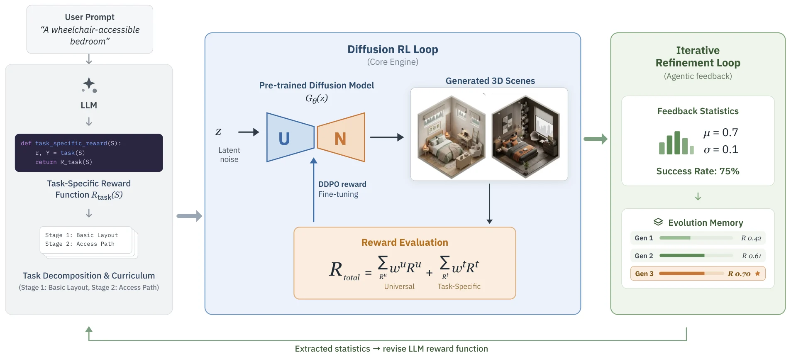
Phase 1
Universal rewards
RL with collision and boundary rewards fixes physical errors in the pretrained model.
Phase 2
Task rewards
The LLM breaks the prompt into geometric checks and writes Python reward code. A LoRA adapter is trained on this reward.
Loop
Reflection
Every 10 RL stages the LLM checks how the reward is doing, using past rewards and their statistics, and rewrites it.
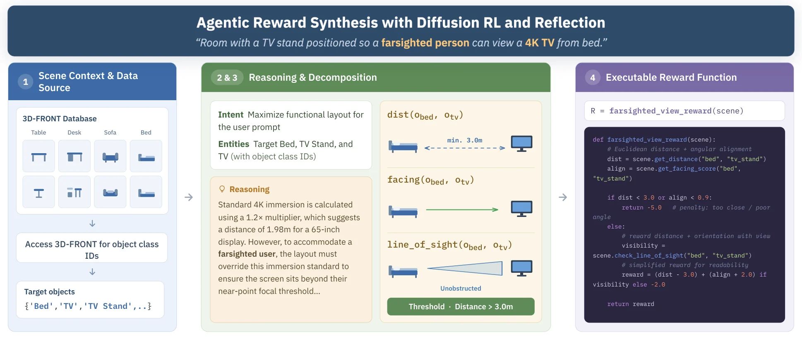
Results
Setup. Trained and evaluated on 3D-FRONT bedrooms, living rooms and dining rooms, with furniture from 3D-FUTURE. Base model: MiDiffusion. RL: DDPO with LoRA. Reward LLM: Gemini 3.6 Flash. Dataset: 12,000 iARCS scenes on Hugging Face (4,000 per room).
Scene synthesis
| Method | Colobj ↓ | Colscene ↓ | Rout ↓ | Rreach ↑ | Rwalkable ↑ | CLIP-FID ↓ | SCA ↓ |
|---|---|---|---|---|---|---|---|
| Ground truth | 43.12 | 80.08 | 2.67 | 71.51 | 0.851 | – | – |
| ATISS | 71.77 | 82.35 | 19.86 | 65.24 | 0.814 | 2.46 | 82.83 |
| MiDiffusion | 62.98 | 91.49 | 17.45 | 77.35 | 0.829 | 2.50 | 77.29 |
| InstructScene | 52.95 | 88.04 | 43.39 | 69.22 | 0.843 | 5.60 | 83.97 |
| PhyScene | 53.87 | 88.19 | 24.29 | 70.55 | 0.849 | 2.48 | 78.62 |
| iARCS (ours) | 50.04 | 74.88 | 10.99 | 80.39 | 0.896 | 2.45 | 76.49 |
Average over bedroom, living room and dining room. All values in % except Rwalkable and CLIP-FID.
Per-room breakdown
| Room | Method | Colobj ↓ | Colscene ↓ | Rout ↓ | Rreach ↑ | Rwalkable ↑ | CLIP-FID ↓ | SCA ↓ |
|---|---|---|---|---|---|---|---|---|
| Bedroom | Ground truth | 42.00 | 72.04 | 5.79 | 82.80 | 0.841 | – | – |
| ATISS | 72.39 | 53.61 | 16.35 | 60.27 | 0.839 | 1.52 | 79.24 | |
| MiDiffusion | 52.67 | 81.67 | 5.89 | 85.70 | 0.806 | 1.40 | 65.99 | |
| InstructScene | 43.48 | 74.07 | 37.98 | 80.14 | 0.798 | 5.23 | 80.29 | |
| PhyScene | 45.35 | 76.04 | 20.32 | 74.72 | 0.813 | 1.49 | 64.55 | |
| iARCS (ours) | 40.45 | 64.63 | 2.94 | 87.82 | 0.861 | 1.60 | 66.61 | |
| Living room | Ground truth | 39.93 | 79.00 | 1.49 | 71.86 | 0.882 | – | – |
| ATISS | 67.81 | 95.35 | 30.12 | 67.23 | 0.792 | 3.05 | 89.12 | |
| MiDiffusion | 64.97 | 93.10 | 31.90 | 75.42 | 0.856 | 3.26 | 85.92 | |
| InstructScene | 63.21 | 95.83 | 46.07 | 63.67 | 0.885 | 5.69 | 87.73 | |
| PhyScene | 60.62 | 93.92 | 29.85 | 72.14 | 0.871 | 3.36 | 86.81 | |
| iARCS (ours) | 58.33 | 65.50 | 20.79 | 80.17 | 0.955 | 3.10 | 84.12 | |
| Dining room | Ground truth | 47.43 | 89.20 | 0.73 | 59.87 | 0.829 | – | – |
| ATISS | 75.12 | 98.10 | 13.10 | 68.23 | 0.812 | 2.82 | 80.12 | |
| MiDiffusion | 71.31 | 99.70 | 14.55 | 70.92 | 0.824 | 2.83 | 79.96 | |
| InstructScene | 52.17 | 94.22 | 46.11 | 63.86 | 0.846 | 5.88 | 83.88 | |
| PhyScene | 55.64 | 94.62 | 22.70 | 64.79 | 0.864 | 2.60 | 84.51 | |
| iARCS (ours) | 51.34 | 94.50 | 9.23 | 73.18 | 0.873 | 2.65 | 78.74 |
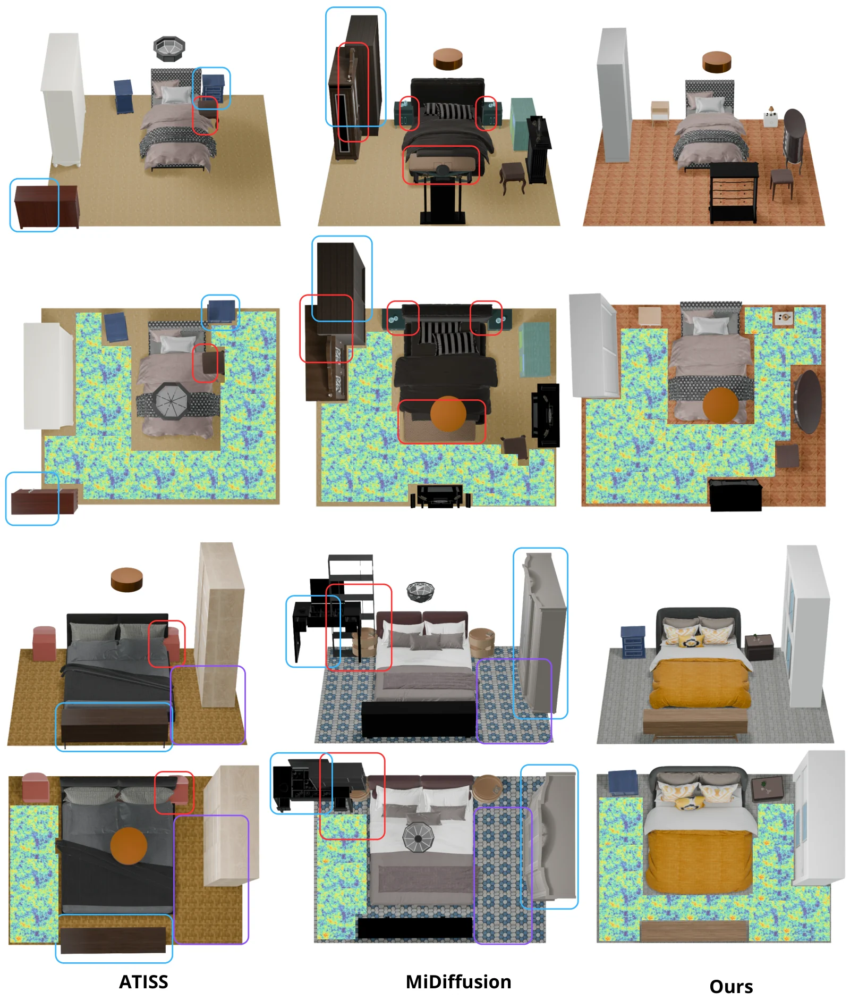
Task-specific constraints
| Task | Method | Success ↑ | SCA ↓ | Colobj ↓ | Colscene ↓ | Rout ↓ | Rreach ↑ | Rwalkable ↑ |
|---|---|---|---|---|---|---|---|---|
| 1. Robot grasping, support surfaces ≤ 1.0 m | 3D-FRONT* | 5.67 | 97.34 | 50.68 | 83.72 | 2.79 | 82.26 | 0.786 |
| MiDiffusion | 4.53 | 86.30 | 54.29 | 88.80 | 6.19 | 75.40 | 0.711 | |
| iARCS | 73.83 | 77.92 | 34.77 | 59.28 | 5.84 | 80.37 | 0.744 | |
| 2. TV visible from bed for a farsighted viewer | 3D-FRONT* | 6.09 | 97.02 | 38.79 | 70.04 | 1.71 | 86.38 | 0.810 |
| MiDiffusion | 5.22 | 89.34 | 56.10 | 78.98 | 5.78 | 79.32 | 0.733 | |
| iARCS | 66.02 | 85.70 | 46.46 | 77.15 | 3.45 | 86.77 | 0.790 | |
| 3. Bedroom with a functional study zone | 3D-FRONT* | 1.04 | 97.58 | 56.86 | 88.67 | 3.33 | 75.17 | 0.728 |
| MiDiffusion | 0.87 | 85.40 | 72.00 | 98.52 | 5.10 | 69.32 | 0.704 | |
| iARCS | 33.39 | 77.97 | 52.38 | 79.39 | 4.59 | 74.75 | 0.738 |
3D-FRONT*: real scenes that already meet the task (for reference). MiDiffusion: the base model without RL. Bold: iARCS beats the base model.
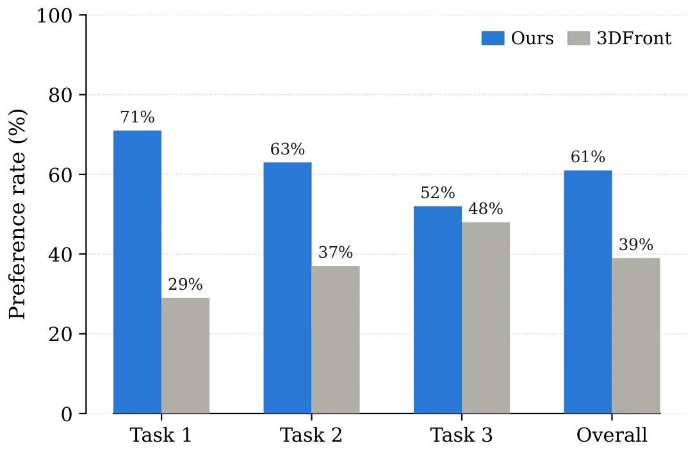
iARCS data helps other models
| Model (training data) | Colobj ↓ | Colscene ↓ | Rout ↓ | Rreach ↑ | Rwalkable ↑ | CLIP-FID ↓ | SCA ↓ |
|---|---|---|---|---|---|---|---|
| ATISS (3D-FRONT) | 72.39 | 53.61 | 16.35 | 60.27 | 0.839 | 1.52 | 79.24 |
| ATISS (3D-FRONT + MiDiffusion) | 71.54 | 51.39 | 17.82 | 60.92 | 0.839 | 1.54 | 78.82 |
| ATISS (3D-FRONT + iARCS) | 69.60 | 50.28 | 13.21 | 64.59 | 0.862 | 1.52 | 78.07 |
| MiDiffusion (3D-FRONT) | 52.67 | 81.67 | 5.89 | 85.70 | 0.806 | 1.34 | 65.99 |
| MiDiffusion (3D-FRONT + MiDiffusion) | 48.26 | 75.65 | 3.78 | 90.00 | 0.813 | 1.37 | 66.86 |
| MiDiffusion (3D-FRONT + iARCS) | 41.49 | 63.61 | 3.12 | 92.52 | 0.827 | 1.34 | 66.10 |
Each model is retrained with 4,000 extra scenes, either from plain MiDiffusion or from iARCS. iARCS scenes help more.
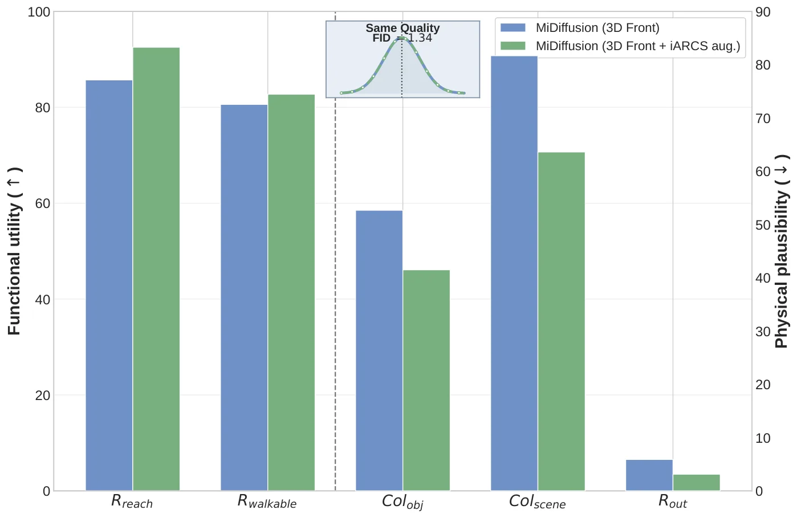
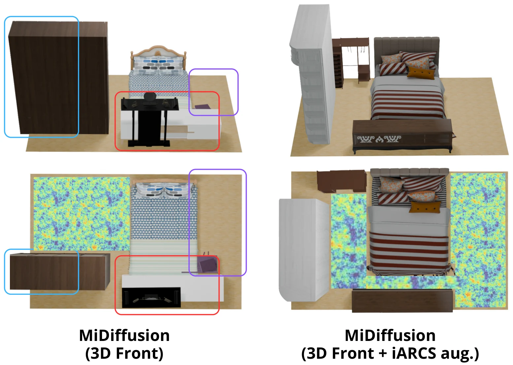
Does the reflection loop matter?
| Method | Task 1 | Task 2 | Task 3 |
|---|---|---|---|
| 3D-FRONT* | 5.67 | 6.09 | 1.04 |
| MiDiffusion | 4.53 | 5.22 | 0.87 |
| Initial reward, frozen | 28.4 ± 5.1 | 22.7 ± 4.3 | 9.6 ± 2.7 |
| Final reward, frozen at step 0 | 69.1 ± 4.6 | 61.8 ± 5.2 | 32.2 ± 4.1 |
| Iterative, no memory | 35.3 ± 6.8 | 41.4 ± 7.1 | 12.8 ± 5.6 |
| iARCS (full) | 73.83 ± 3.2 | 66.02 ± 3.8 | 33.39 ± 3.5 |
Task success (%), mean ± std over 3 seeds. Without the reflection loop or the memory, success drops sharply.
Why two phases?
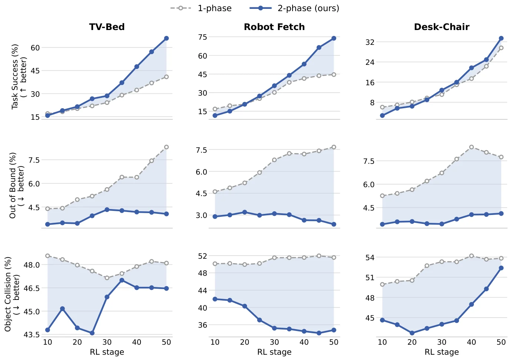
More examples
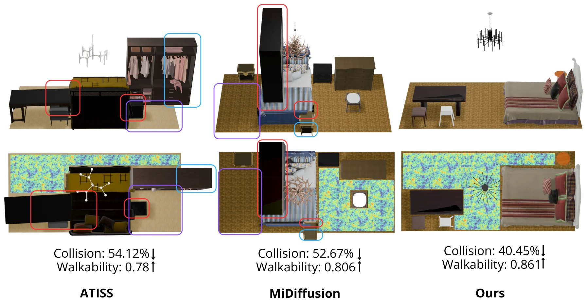
FAQ: controllable 3D indoor scene generation with RL, DDPO and Eureka-style rewards
iARCS sits between 3D indoor scene synthesis models (ATISS, DiffuScene, MiDiffusion, InstructScene, PhyScene), LLM-driven 3D scene generation for embodied AI (Holodeck, SAGE, LayoutGPT, ProcTHOR) and reinforcement learning for diffusion models (DDPO, DPOK) with LLM reward design (Eureka).
What is iARCS?
iARCS (Iterative Agentic RL for Controllable 3D Scene Generation) adapts a pretrained 3D indoor scene diffusion model (MiDiffusion) to natural-language functional constraints using reinforcement learning (DDPO) with LLM-written reward programs.
How does iARCS use reinforcement learning for 3D scene generation?
It treats the scene diffusion model's denoising process as a policy and fine-tunes it with DDPO. Phase 1 uses hand-designed universal rewards (collisions, boundary adherence); phase 2 trains a LoRA adapter on a task-specific reward written by an LLM.
Is iARCS DDPO for 3D scenes?
Yes. iARCS applies DDPO (denoising diffusion policy optimization) to a 3D indoor layout diffusion model trained on 3D-FRONT, bringing diffusion RL fine-tuning from images to 3D scene synthesis.
How is iARCS related to Eureka?
Like Eureka (human-level reward design via coding LLMs), an LLM writes executable Python reward code and refines it from training feedback. iARCS brings this Eureka-style reward design to 3D scene generation: the LLM decomposes the request into geometric checks and periodically reflects on reward statistics to rewrite the reward.
How is iARCS different from Holodeck or SAGE?
Holodeck and SAGE use an LLM agent to place objects at generation time. iARCS uses language only to write rewards; the agentic cost is paid once during post-training, and sampling afterwards runs the fine-tuned diffusion model with no LLM in the loop.
Why not use PhyScene-style guidance?
Gradient guidance needs differentiable constraints. iARCS optimizes non-differentiable functional constraints such as walkability, reachability and clearance through RL rewards.
How well does iARCS satisfy task constraints?
On the three task constraints it reaches 73.83%, 66.02% and 33.39% success, compared with 4.53%, 5.22% and 0.87% for the base MiDiffusion model.
Is RL better than rejection sampling here?
Yes. Rejection sampling needs about 3.7x more samples and is still worse on CLIP-FID and SCA in every room type.
Does iARCS data help other 3D scene generators?
Yes. Adding 4,000 iARCS scenes to 3D-FRONT improves every plausibility and functional metric for both ATISS and MiDiffusion, with essentially unchanged CLIP-FID and SCA.
Is the code and dataset available?
Yes. Code: github.com/thenaivekid/iARCS. Dataset: 12,000 generated 3D indoor scene layouts (4,000 bedrooms, living rooms and dining rooms each) on Hugging Face (Saugat20021/iARCS, CC BY-NC 4.0; 3D-FRONT/3D-FUTURE needed for meshes). Paper: arXiv:2608.06161.
What are the limitations?
Each new constraint needs its own LoRA run, results depend on the LLM's task decomposition, and evaluation covers 3D-FRONT-style indoor layouts.
BibTeX
@article{adhikari2026iarcs,
title = {iARCS: Iterative Agentic RL for Controllable 3D Scene Generation},
author = {Adhikari, Saugat and Neupane, Ashok Prasad and Paudel, Pramish
and Chhatkuli, Ajad and Paudel, Danda Pani},
journal = {arXiv preprint arXiv:2608.06161},
year = {2026}
}